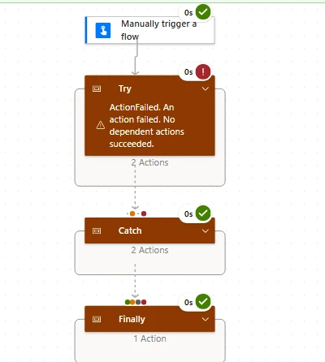

- Power Automate
- Level 4 · Reliable flows · 1 of 7
Scopes and the try / catch pattern
By default, when one step fails, every step after it is skipped and the run ends as Failed. Nobody is told, and nothing is cleaned up. The try / catch / finally pattern fixes that with three Scope actions: put the work in Try, the recovery in Catch, and anything that must always happen in Finally.
The pattern in one picture

| Scope | Contains | Runs after |
|---|---|---|
| Try | The real work: Read order, Calculate tax | The trigger |
| Catch | Find the error, alert, log | Try has failed or has timed out |
| Finally | Clean-up, a summary, a log entry | Catch succeeded, failed, skipped or timed out (anything) |
In the demo, an order arrives with the amount "not a number". Calculate tax tries int() on it and fails, which fails the Try scope and starts Catch.
Finding out what went wrong
Inside Catch, result('Try') returns every action in the Try scope with its status and error. Filter it to the failed ones:
first(body('Failed_actions'))?['error']?['message']| Piece | What it does |
|---|---|
result('Try') | Used in a Filter array named Failed actions: the list of actions inside Try with their status. |
where status equals 'Failed' | Keeps only the action that failed. |
first(...)?['error']?['message'] | Its error message, ready to put in an alert or log. |

Why the run says Succeeded
This run shows Your flow ran successfully even though Calculate tax failed. Power Automate judges a run by its last steps, and Finally succeeded. That's fine when Catch really handled the problem. When it didn't, the run should still be marked as Failed so it shows up in monitoring. The Terminate action does that (see Error alerts and Terminate).
New to this? Start from the basics optional
Scope: a container that groups actions. The scope's status is the combined status of what's inside it.
Run after: the setting that decides when an action runs: after the previous one succeeded, failed, was skipped or timed out. The next article covers it in detail.
result('ScopeName'): an expression that returns the outcome of every action inside a scope.
Build it step by step optional
- Add a Scope named Try and move your main actions into it.
- Add a second Scope named Catch below it. Open its Settings > Run after, tick has failed and has timed out, and untick is successful.
- Inside Catch add Filter array: From
result('Try'), whereitem()?['status']is equal toFailed. - Add a Compose with
first(body('Filter_array'))?['error']?['message']. - Add a third Scope named Finally, set to run after Catch for all four outcomes.
- Make a step in Try fail on purpose (for example
int('abc')) and test.
Common mistakes
- Leaving Catch on the default is successful. It is then skipped exactly when you need it.
- Catching everything and reporting nothing. A Catch scope with no alert or log hides failures.
- One huge Try around the whole flow. Smaller Try scopes per stage tell you which stage broke.